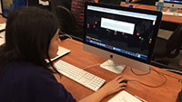
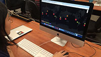
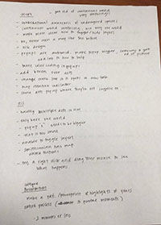

Audience Test Results
Feedback
Both of my testers understood the overall purpose of my project which was to create a conversation about endangered animals. Both users said that the continuous world was really confusing because since the interactive dots only worked on the main map, when they panned to a different map, it would seem like the popups didn't work. However, it was just that the popup was popping up on the main map. They were also both unable to figure out how to turn on and off layers. They also commented on the popup design and said that they wished the box was bigger. Also, Joseph commented that he wished there was a hover and tooltip over the dot so the user knows that element is interactive. He also discovered the map rotate function which I did not know to access beforehand since I have been using my laptop to make my project and you need a mouse in order to access it. Iris was my other tester and wished that she could open multiple popups at the same time. Also, the "X" exit button and the font-size on each popup were too small.
For my final project I will try to implement all these changes. I think that the most pressing change is definitely the continuous world. That was super confusing to the audience and needs to be fixed immediately. I am also going to add "hints" at the bottom of the map so the user knows that the layers are able to hidden and that they can rotate the map.
This activity was extrememly useful because it helped me understand what my project was lacking. Getting immediate feedback was really nice because I was able to ask detailed questions and ask for suggestions. It was also very helpful to just watch the testers use my project. I was able to see exactly which parts of my project needed improving upon since normally I would not have the user right in front of me. This will help me create the best experience for the user.
  